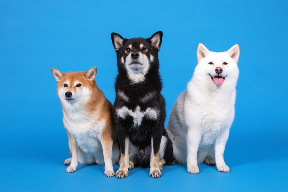

[디지털 데일리 강소현 기자] 그야말로 귀여운 애 옆에 또 귀여운 애 조합이다. 아기
와 3마리의 시바견은 조합부터가 반칙 아닐까?
CJ ENM 다이아티비의 파트너 '솜이네 곰이탱이여우'는 국내 시바견 유튜브 채널 가운데 가장 많은 75만명의 구독자를 보유하고 있다. 채널을 운영하는 아빠집사 '쏭편'과 엄마집사 '쏭이'는 채널의 차별화된 감정으로 '3견3색'을 꼽는다. 의젓하고 든든한 큰 아들 같은 탱이와 새침데기 곰이, 행복 바이러스를 내뿜는 여우까지 이 집엔 3마리의 시바견과 3살이 된 아기 솜이가 살고 있다.
채널은 시바견들과 함께 성장해 왔다. 회사에서도 보고 싶어 하나둘 찍던 영상을 유튜브에 공유한 것이 계기가 됐다. 첫 업로드일인 2015년 5월21일부터 7년이라는 시간 동안 부부는 하루도 빠지지 않고 시바견들의 일상을 공유해 왔다. 이런 꾸준함 속에 곰이·탱이·여우를 마음으로 함께 키우는 이른바 ‘찌바’(구독자 애칭)들도 빠르게 늘었다.
“아마추어인 저와 남편이 집에서 직접 촬영하고 편집하다보니 부족한 부분이 많아요. 그럼에도 곰이탱이여우를 예뻐해주시고 응원해주시는 찌바님들의 마음에 조금이나마 보답하고자 꾸준하게 소식을 전하고 있습니다”
시바견들의 좌충우돌 일상으로 채워졌던 채널은 2020년 변곡점을 맞이했다. 그해 12월 두 사람 사이에 솜이가 태어나면서다. ‘과연 개와 아이를 같이 잘 키울 수 있을까’. 우려와 달리 솜이 앞에선 어설프게 부모 역할을 해내는 곰이·탱이·여우와 함께 채널도 성숙기에 돌입했다. 올해 부부는 전문가의 자문을 받아, 아이와 강아지를 잘 키우는 방법에 대해 공유한다는 목표다.
“아기와 강아지를 건강하고 안전하게 키우는 모습을 보여드려서 저희와 비슷한 고민을 하고 있는 찌바님들에게 조금이나마 용기를 드리고 싶습니다”

다음은 '솜이네 곰이탱이여우'와의 일문일답.
Q. 본인 소개 부탁드립니다.
▲안녕하시바 개성 넘치는 삼시바와 귀여운 아기 솜회장님을 모시고 사는 엄마집사 쏭이님입니다.
Q. 채널을 운영하게 된 계기가 궁금합니다. 또 플랫폼으로 유튜브를 선택한 이유 무엇인가요?
▲처음에는 회사에서 일하는 중간중간 탱이 영상을 보고싶어서 찍다가 유튜브에 올리게 됐습니다. 유튜브를 선택했던 이유는 장소와 시간에 구애 받지 않고 접속이 용이했기 때문입니다. 무료로 대용량의 영상을 저장할 수 있다는 부분도 유튜브를 선택한 또 다른 이유입니다.
Q. 기존 시바견 유튜브 채널에서 솜이의 탄생을 기점으로 진정한 '패밀리' 채널이 됐습니다. 그에 따른 변화와 고민이 있었을지 궁금합니다.
▲처음에는 저희도 걱정이 많이 됐습니다. 부모가 되는 건 처음이라 ‘강아지와 아기를 안전하고 건강하게 키울 수 있을까?’ 걱정도 많이 됐었죠. 그럼에도 오랫동안 지켜봐 주신 찌바님들의 응원에 용기를 얻고 강아지와 아기를 잘 키워보려고 열심히 준비했습니다.
하지만 모든 사람의 마음이 다 같지 않더라고요. 저희가 노력하는 모습을 보여도 우려의 목소리가 계속 나왔습니다. 진심어린 조언을 주시는 찌바님들이 계신 반면 ‘아기를 키우려면 강아지를 다른 곳에 보내야한다’ ‘개털이 아기 폐에 들어간다’ 등 잘못된 사실이나 억측 만으로 상처를 주는 댓글을 남기시는 분들도 계셨어요.
이에 아기와 강아지를 건강하고 안전하게 키우는 모습을 보여드려서 저희와 비슷한 고민을 하고 있는 찌바님들에게 조금이나마 용기를 드리고 싶은 마음입니다. 조만간 전문가 선생님을 만나서 정확한 정보도 전해드릴 예정이니 많은 기대 부탁드려요.
Q. 애견 크리에이터로 활동하면서 인상 깊었던 사례나 기억남는 에피소드가 있다면 무엇입니까?
▲아무래도 팬미팅이 가장 기억에 남는 것 같아요. 신종 코로나바이러스 감염증(코로나19) 팬데믹(세계적 대유행) 이전에는 매년 팬미팅을 통해 찌바님들과 만났어요. 아빠 손잡고 와주는 어린이 찌바님부터 저희 어머니뻘 되시는 찌바님들까지 정말 남녀노소 많은 찌바님들이 찾아와 주셨었어요. 팬미팅에 참석하기 위해 먼길 오시는 찌바님들에게 매번 감동 받았습니다. 코로나가 끝나면 찌바님들 모셔서 다같이 도시락 먹으면서 이야기할 수 있는 자리를 만들고 싶어요!
Q. 지난해 말 에코멍 상품의 판매 수익금을 환경단체와 유기견보호소에 기부하셨는데 이런 프로젝트를 시작하게 된 계기는 무엇입니까?.
▲개인적으로 유기견센터에 간식이나 사료를 기부해왔는데 아무래도 개인이다 보니 그 양이 많지 않아 늘 아쉬움이 컸어요. 그런데 이번엔 에코멍 수익금으로 더 많은 양의 사료를 기부할 수 있게 되어 기뻤습니다. 우리 찌바님들이 힘을 모아주셔서 더 뿌듯해요! 앞으로도 찌바님들과 함께하는 기부 행사를 많이 만들고 싶습니다. 코로나가 끝난 뒤에는 찌바님들과 함께하는 유기견 산책봉사도 계획하고 있습니다.
Q. 애견인 구독자분들을 위해 강아지와 여행가기 좋은 지역을 추천해주십시오.
▲저희가 간 곳 대부분이 좋았지만 그 중에서도 강릉과 속초를 추천하고 싶습니다. 파랗고 탁 트인 동해바다를 보면 정말 가슴이 뻥 뚫리는것 같아요. 강아지들도 그런가봅니다. 바다보면 신나서 막 뛰어다녀요. 시바들이랑 나잡아봐라~ 하면서 뛰어다니면 숨은 차지만 ‘이게 찐행복이지~’ 하는 생각이 듭니다. 무엇보다 속초와 강릉에 강아지동반 가능 숙소가 많으니 예산에 맞게 예약하시면 좋을 것 같아요.
Q. 올해 준비 중인 프로젝트나 사업, 콘텐츠 등이 있다면 무엇입니까?
▲올해는 강아지와 아기를 안전하고 건강하게 키우는 방법에 관한 콘텐츠를 제작할 계획입니다. 저희도 이 둘을 함께 키울 때 어떻게 해야 할지 참 막막했는데, 우리나라에는 이와 관련한 콘텐츠가 많이 없더라고요. 이 때문에 개인적으로 해외 사례나 논문을 읽으며 공부할 수 밖에 없었습니다. 그래서 올해는 전문가를 직접 만나 얻은 정확한 정보를 많은 찌바님들에게 공유하고 싶습니다.
Q. 채널을 운영하면서 시청자/구독자들에게 전하고픈 메시지 또는 궁극적으로 바라는 점이나 목표가 있다면 무엇입니까?
▲강아지를 키우는 사람도 키우지 않는 사람도 모두 조화롭게 사는 반려동물 문화를 만들고 싶어요. 해가 갈수록 반려인과 비반려인들 간의 간격이 멀어지고 서로에게 날이 서 있는 것 같은 느낌이 들어요. 서로에 대한 배려와 올바른 문화가 확립돼 있지 않아서 그런 것 같습니다.
이럴수록 규제보단 서로를 이해하고 배려하는 것이 중요하다고 생각해요. 저희가 모든 것을 바꿀 순 없지만 제 자리에서 올바른 문화를 실현하고 전파하면 인식이 조금씩 바뀌지 않을까요?
Q. 향후 곰이탱이 채널의 운영 계획과 크리에이터를 꿈꾸는 독자분들께 전하고 싶은 말이 있다면 해주세요.
▲크리에이터의 원동력은 팬분들의 사랑과 관심으로 만들어지는 것이라고 생각해요. 찌바님들이 계셨기 때문에 7년이라는 긴 시간동안 곰이탱이여우를 건강하고 행복하게 키울 수 있었습니다. 찌바님들과 함께 키워왔다고 생각해요. 곰이탱이여우 솜이와 함께 즐거운 추억 만들어가는 모습 보여드릴 예정이니 기대해주시고 앞으로도 많은 사랑과 관심 부탁드려요.